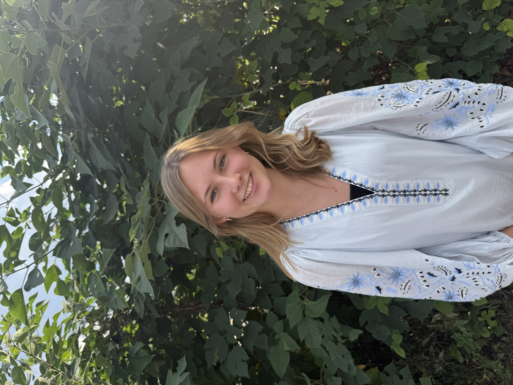
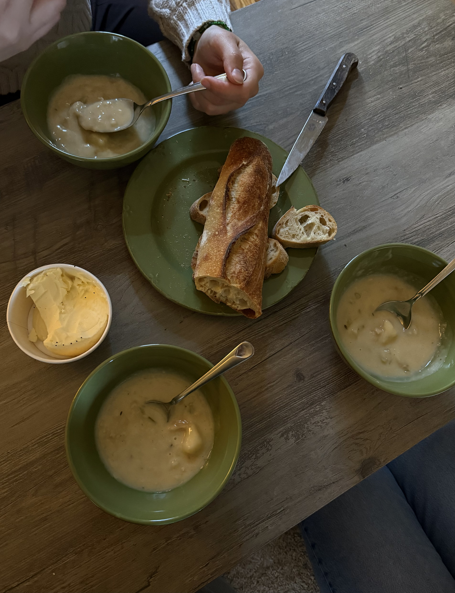
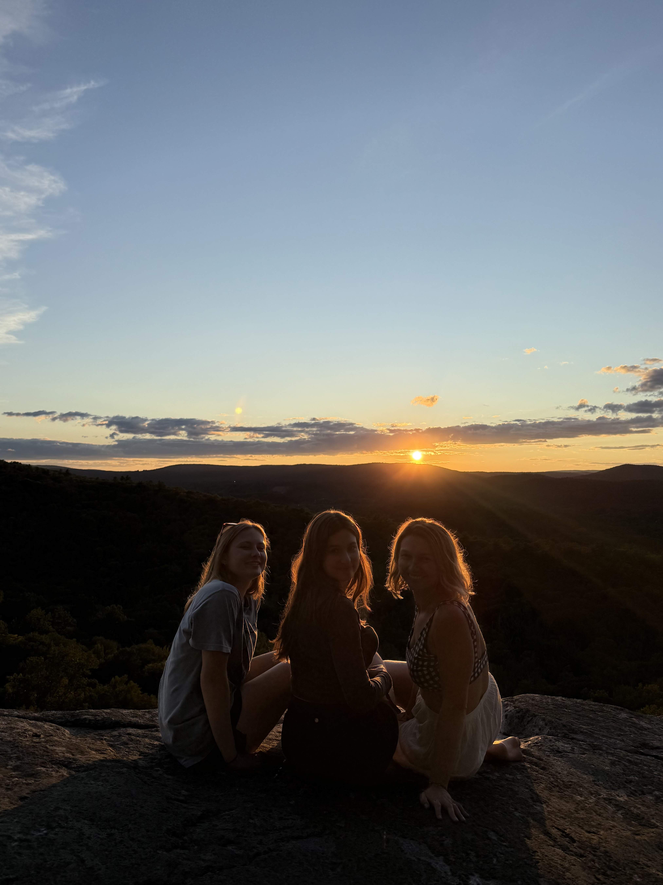
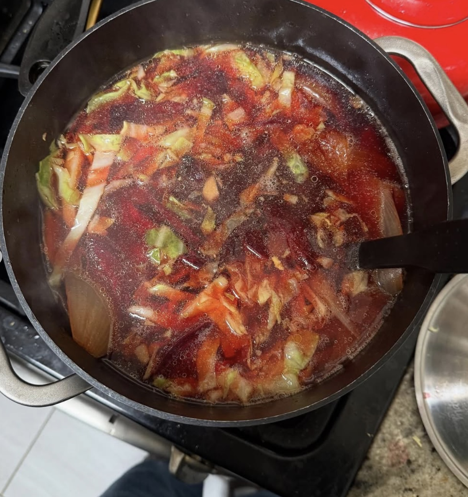
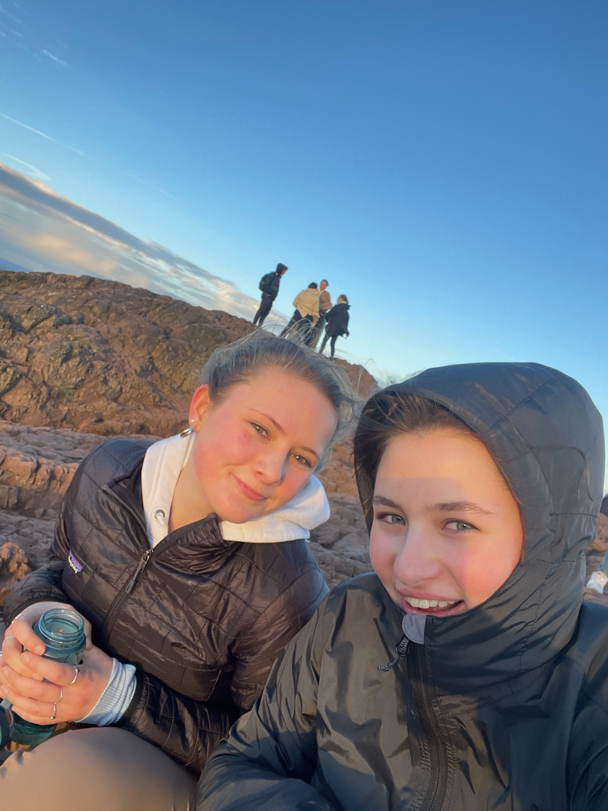
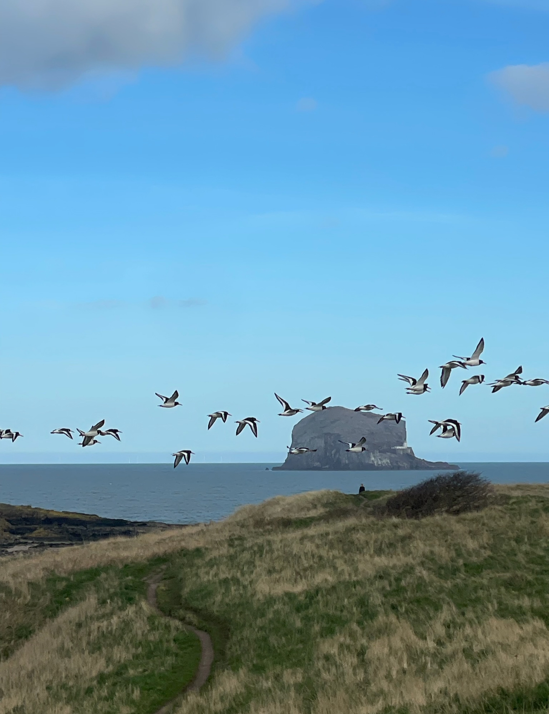
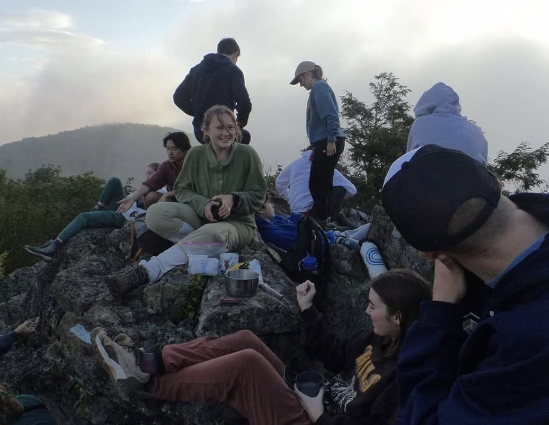

Hi, I'm Maryana!
I am currently a Dangermond Fellow at the National Audubon Society, where I work with Audubon's Enterprise GIS team to manage geospatial data and develop tools that support the conservation of birds and their habitats.
My work combines spatial analysis, data visualization, and storytelling to help scientists, policymakers, and local Audubon chapters make informed decisions and advocate for effective conservation solutions.
I studied Economics, Geography, and Geographic Information Systems (GIS) at George Washington University, where I became interested in the intersection of these fields and how they can help solve social, economic, and environmental challenges. This interdisciplinary perspective continues to shape my work.
Please explore my work and feel free to reach out if you have questions or would like to discuss or collaborate on a project!
When I'm not working, you can find me spending time outside, whether running, hiking, or simply enjoying time with friends! I love trying new things and continuing to learn through everything that I do. Some of my favorite things include making soup, Mary Oliver poetry, and live music of any kind!





